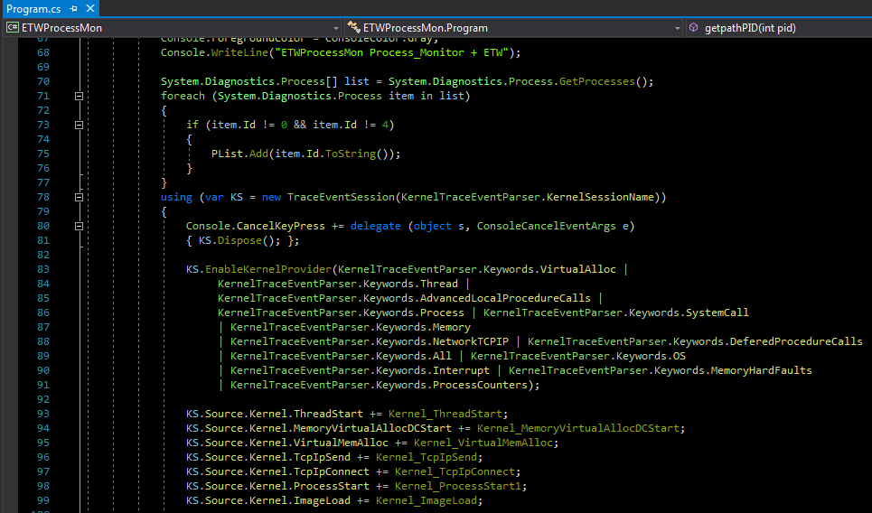

ETW + Some Important Things for Defenders
ETW + Some Important Things for Defenders
In this article i want to talk about ETW & some important things (in my opinion) for Defenders, before anything i want to say programming by C# + ETW is not hard so
i think all C# developers can use that especially for Defensive Approach.

Picture 1: C# code for some interesting things with ETW
in this code i want to show some important things for Processes in memory like "VirtualMemAlloc, Threads, New Processes, Dll, Network Connections".
(for better resolution: please click on picture)
Picture 2: VirtualMemAlloc in target Process (Notepad) Detected by ETW & C# Code
in this Picture 2 you can see Thread Injection into Notepad by "NativePayload_TId2" tool and in step2 we have VirtualMemAlloc which called by injector for attack in-memory to
Notepad and this step Detected by ETW in kernel very simple and you can see which End-Address & Length-Hex .
in next Picture 3 you can see with this tool i had Meterpreter shell via Thread Injection...
(for better resolution: please click on picture)
Picture 3: Thread injection attack (Meterpreter session) & thread injection Detected by ETW & C# Code
with "NativePayload_TId2.exe 9684 [payload]" we have this (Intptr Address:21A75810000) which means Code Injected to Notepad Memory with this Pointer-Address
and with this "NativePayload_TId3.exe 1234 9684 21A75810000" we have Session very simple and you can see these information Detected by ETW...
as you can see TID:4232 Injected into "Notepad" by "NativePayload_TId3" and we have these information by ETW very simple also you can see which DLL loaded in memory by that Injected Thread.
Important point:
this attack had two parts, first VirtualMemAlloc which in this part i used "NativePayload_TId2" and second part is CreateRemoteThread which in this part i used "NativePayload_TId3" code, so by ETW we have VirtualMemAlloc event + intptr Address also with ETW we have Thread Injection Event etc. if you have something like "Process-Access" event by ETW then you can see both code NativePayload_TId2 and 3 in your Event logs which had Access to Notepad.exe with PID:9684 , first had VirtualMemAlloc (NativePayload_TId2) and second had Thread Injection/CreateRemoteThread (NativePayload_TId3), as Defender for you it means we have/had two unknown Process which had Access to Notepad and Notepad have/had Network Connection (Meterpreter Session) to Attacker system... then perhaps you will say "HUM".
(for better resolution: please click on picture)
Picture 4: Thread injection attack (Meterpreter session) & ETW
in the next "picture 5" you can see i tested ETW with "Process Hollowing" Technique
(for better resolution: please click on picture)
Picture 5: Thread injection attack (Meterpreter session) & ETW
As you can see in these Tests and Pictures if you want to use ETW,
this will help you a lot and ETW is "very useful" thing for Defenders & Blue teams too.